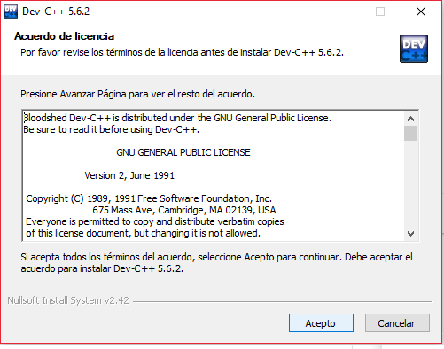

INTERNSHIP es un sistema de control de seguimiento de pasantia que constara de una base de datos que seran reguistrados todos aquellos estudiantes que estaran realizando su pasantia correspondiente.
A continuacion daremos a conocer la instalacion del sistema.
Hay que tener en cuenta que INTERNSHIP es solo de uso del sistema operativo windows, ya sea desde lo mas basico desde windows 7.
El sistema INTERNSHIP constara de varias versiones a futuro ya que se es un sistema nuevo reservado para el uso de una solo establecimiento de educacion que sera entregara la extension de instalacion al establecimiento.
Los requerimientos para la instalacion son una parte muy importante ya que sera los soportes para la funsionalidad del software.
Para la instalacion del sistema tu equipo de hardware y software debera constar como minimo de los siguientes requerimientos:

Concluyendo con los requerimientos pasaremos a la instalacion del sistema en el equipo.
El primer paso para la instalacion deberas ejecutar como administrador el sistema por ejemplo:
El sistema debera ser instalada en el disco de que se encuentra el sistema del equipo, ya que ocacionaria algunos daños o errores en la instalacion
Luego de seleccionar el disco del sistema, tendras que instalar mediante los pasos que te indica segun avanza la instalacion ya que debes tomar en cuenta las imagenes que veras son similares a los pasos que daras para la instalacion de INTERNSHIP:
El primer paso que daremos es seleccionar el idioma del sistema:
A continuacion tendremos que aceptar los terminos para continuar el instalando del sistema:
Ahora deberemos de poner siguiente para seguir avazando:
Para semi concluir la instalacion verifca que esta guardado en el disco del software del equipo:
A continuacion debera cargar la instalacion del sistema esto puede tardar unos minutos.
Dando a concluir la instalacion te aparecera esta informacion tendras que dar finalizar.
Por ejemplo podremos ver uno de algunos de los errores que se puede ocacionar al no seguir la instalacion correctamente :